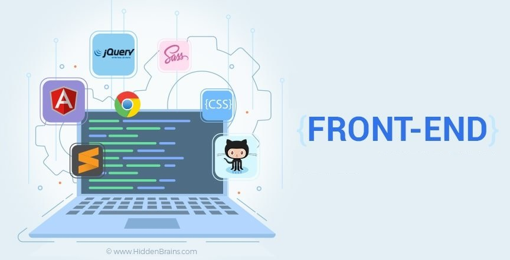
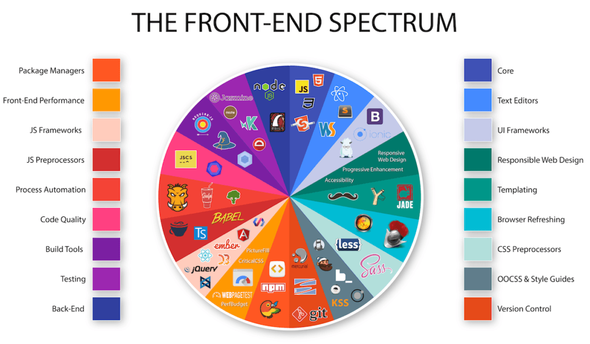

Cet article présente les dix meilleurs langages de programmation front-end, leurs principales caractéristiques, leurs avantages, et leurs limites. La liste comprend HTML, CSS, JavaScript, Angular, Vue, SASS, Swift, Elm et jQuery. Lors du développement d’une application mobile ou web, le côté client ou frontend revêt une grande importance car l’utilisateur n’en fait qu’une expérience. Bien que le backend ait également une grande importance, un utilisateur ne peut être témoin que de ce qui se passe sur le frontend.
Par conséquent, pour améliorer l’impression de votre application devant un utilisateur, un développeur ne peut pas faire de compromis sur la qualité du développement frontend. Pour offrir une excellente expérience utilisateur côté client, les langages frontend jouent un rôle important.
Frontend et backend sont deux termes très célèbres qui sont couramment utilisés dans le secteur du développement de logiciels. Tout d’abord, si nous parlons de frontend, vous pouvez l’appeler la peau du logiciel.
En effet, le frontend est le « côté client » d’une application qui peut être touché, vu et expérimenté. En d’autres termes, tout ce que l’utilisateur d’une application voit est le frontend, comme les menus de navigation, le modèle d’application et les boutons, etc. JavaScript, CSS, React et HTML sont des langages frontend largement reconnus.
Il existe trois principaux langages front-end qui sont utilisé universellement, HTML, CSS, et JavaScript. Ce sont tous des langages qui sont assez simple à apprendre pour les programmeurs débutants, de plus ce sont les clés du front-end.
C'est en août 1991 que Tim Berners-Lee annonce publiquement son travail, en utilisant d'ailleurs le premier fichier HTML de l'histoire. C'est donc cette date qui marque la naissance officielle de l'HTML
Les années 2000 voient les deux camps se déchirer. Dans une tentative de reprendre le contrôle et d'imposer son idée, le W3C annonce qu'il abandonne le développement de l'HTML et qu'il se lance dans le développement de l'XHTML, Ensuite l'HTML 5 doit être compatible avec toutes les versions précédentes de l'HTML. Autrement dit une page web écrite en 1997
HTML ou langage de balisage hypertexte est généralement utilisé pour développer des sites web, des pages web et des applications web. Après sa sortie initiale en 1993, il a été constamment mis à jour pour ajouter de nouvelles fonctionnalités. La dernière version de HTML5 est arrivée cette année. Les développeurs novices préfèrent commencer leur carrière de programmeur frontend à partir de HTML.
Fonctionnalités principales
Largement compris – Le HTML est toujours préféré à un autre programme pour le développement d’un code backend. C’est simplement parce qu’elle est simple, petite et largement comprise.
Facile à apprendre et à mettre en œuvre – Il s’agit d’un langage gratuit et facile à comprendre. Il n’est pas difficile d’utiliser ce langage avec une implémentation donnée. Plus important encore, il est directement compris par tout navigateur sans qu’il soit nécessaire de le masquer avec un autre langage frontend.
Intégration transparente avec d’autres langues – Il est possible d’éditer sans effort le code d’une autre langue. Il peut être intégré rapidement à tout autre code ou formulaire. De nombreux programmeurs qui ont une connaissance de n’importe quel langage frontend ou backend ont utilisé le HTML.
Test et débogage faciles – Il est convivial et facilement compréhensible par un utilisateur, même si une erreur est commise dans la mise en page ou le formatage. C’est également l’un des langages frontend les plus légers actuellement disponibles.
CSS est un autre des meilleurs langages frontend. Les feuilles de style en cascade sont essentiellement un outil de conception Web utilisé pour contrôler la mise en page d’une page Web. CSS est un style en cascade distinct qui fonctionne dans le frontend. Le CSS est en fait un petit fichier qui copule avec le backend.
Ainsi, cela permet de s’assurer que le langage frontend comprend parfaitement le code et la manière dont il fonctionne. Il est apparu en 1996, un an après JavaScript, et a été développé par le W3C.
Fonctionnalités principales
Framework de style en cascade – Cela peut être avantageux pour les différentes pages Web qui ont beaucoup de types différents de contenu ou de charge de conteneur.
Moins de charge sur le fichier HTML – Ceci peut être utilisé avec le code HTML pour mettre en cascade le fichier HTML et son contenu afin de permettre une moins grande charge sur le code HTML.
Richesse fonctionnelle – Les CSS offrent de nombreuses fonctions en matière de style de texte, de polices et de couleurs. Il peut contrôler l’aspect et la convivialité de l’ensemble de votre page Web à l’aide d’une simple taille et d’une couleur de police.
Prise en charge par plusieurs navigateurs – CSS assure la prise en charge par plusieurs navigateurs et permet au navigateur de comprendre le placement et l’exécution efficace du code.
Favorise l’uniformité à travers les plateformes – Ce langage de programmation frontal garantit que le contenu et les données sont dans la bonne syntaxe. Il y a donc moins de place pour les erreurs dans le contenu et la lisibilité.
Cet article présente l’un des meilleurs langages de programmation frontend. Que vous soyez une entreprise ou un codeur, il est essentiel de comprendre les besoins de programmation de votre application.
Il ne fait aucun doute qu’après avoir compris les exigences de votre logiciel, il sera plus facile de choisir le bon langage frontend pour assurer le succès de votre entreprise.
Le frontend est le « côté client » d’une application qui peut être touché. D’autre part, toutes les opérations qui sont liées au « côté serveur » font référence au backend.
– Évolution de carrière – Salaires élevés – Possibilités de vivre dans les pays développés
